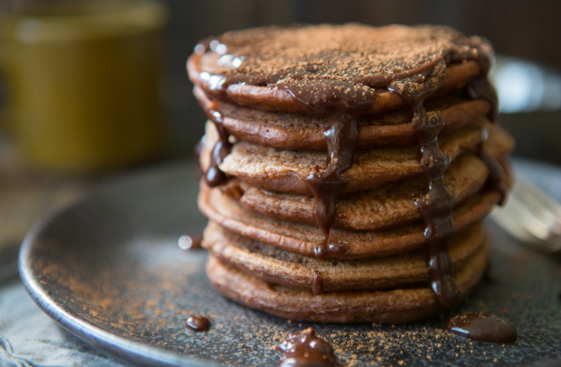

Intro
Original
Chocolate
Strawberry
Strawberry Cows
When you really want something fruity...
Diet
strawberries
cream
sugar
pink color
Hot Chocolate Pancakes
measure out milk and cream
place in non-stick pot and add tsp of salt
stir...
bring to boil and remove heat
add 3 tspn of vinegar and stir
wait 1 min and let curdle
strain
wait 25 min
done!
